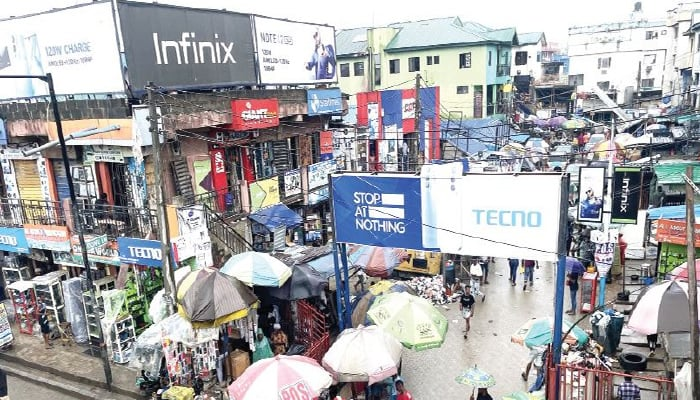
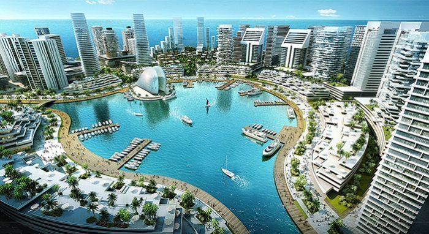

Discover Our Area
About Lagos
Lagos is Nigeria’s economic hub and a vibrant metropolis. From its bustling tech markets to tranquil beaches and conservation centers, it offers a diverse experience for businesses and visitors alike.
Lekki Conservation Centre
A popular nature reserve known for its long canopy walkway, wildlife, and serene environment.
Km 19 Lekki-Epe Expressway, Lekki Peninsula, LagosNike Art Gallery
One of the largest art galleries in West Africa, showcasing thousands of artworks and promoting Nigerian culture.
2 Elegushi Road, Lekki Phase 1, LagosNational Theatre Lagos
A major cultural landmark used for performances and exhibitions, representing Nigeria’s rich heritage.
Iganmu, Surulere, LagosTarkwa Bay Beach
A peaceful beach destination known for water sports and relaxation, accessible by boat from Victoria Island.
Near Lagos Harbour, Victoria Island, LagosComputer Village Ikeja

The largest ICT market in Nigeria and a major hub for technology and entrepreneurship.
Otigba Street, Ikeja, LagosMurtala Muhammed Airport
Nigeria’s busiest international airport, serving as a key gateway for business and tourism into the country.
Ikeja, LagosFreedom Park Lagos
A historic site turned cultural center hosting concerts, festivals, and recreational activities.
Broad Street, Lagos IslandMurtala Muhammed Airport
Nigeria’s busiest international airport, serving as a key gateway for business and tourism into the country.
Ikeja, LagosEko Atlantic City

A modern coastal city project representing Lagos as a growing global economic hub.
Victoria Island, Lagos